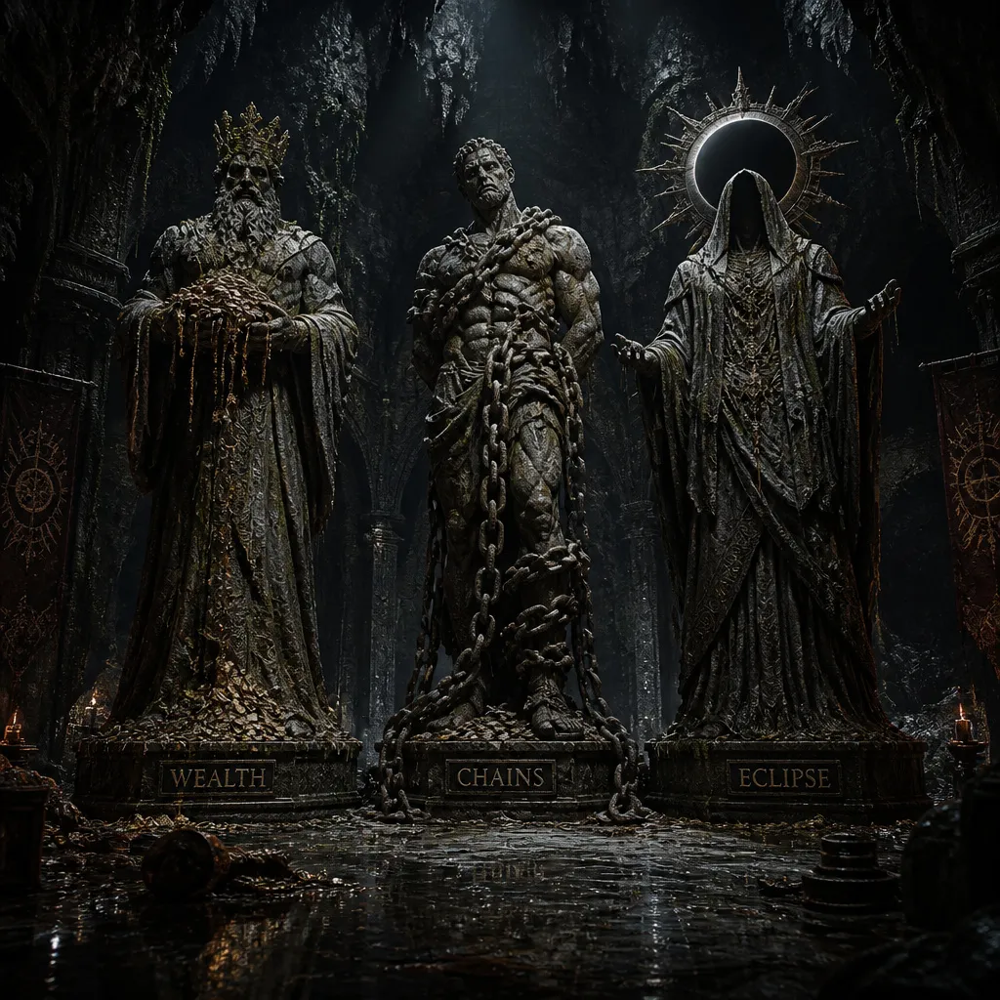
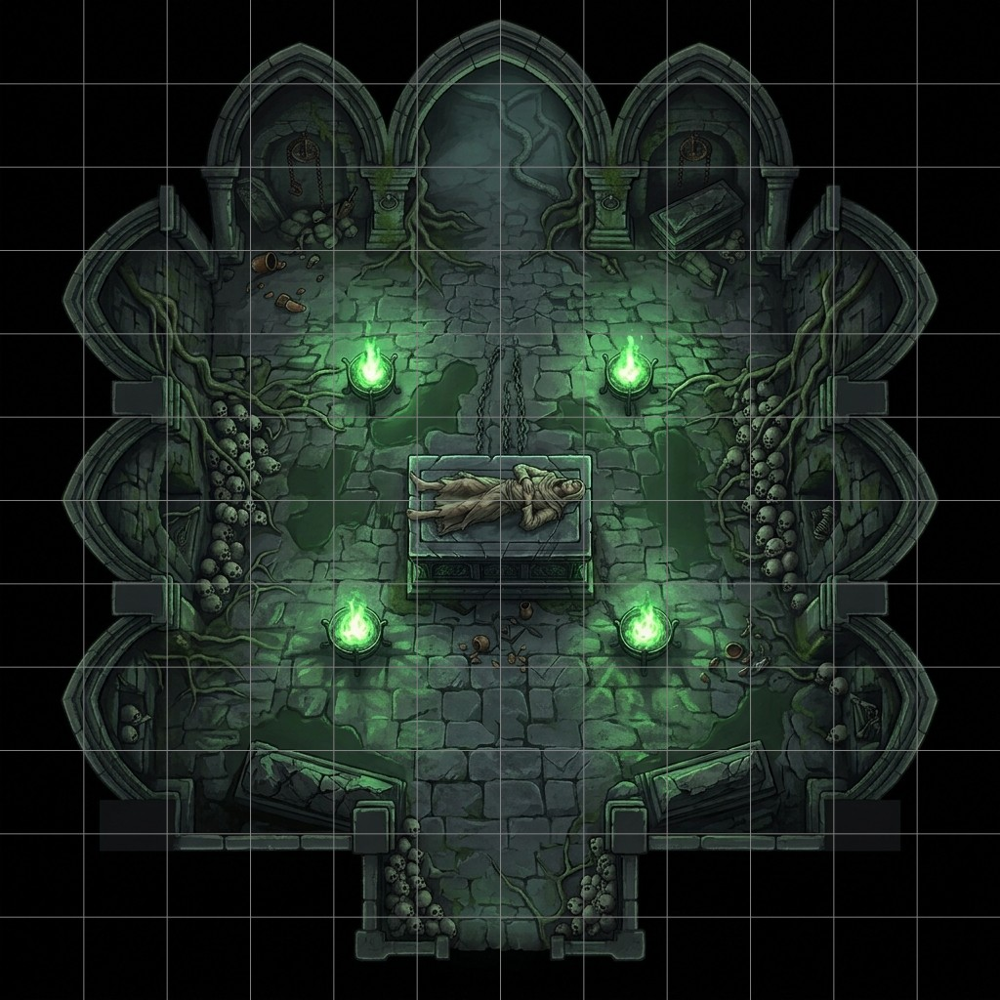

CRONACHE & DADI
CRONACHE & DADI
[ONE-SHOT PLUG-AND-PLAY]
Il Banchetto delle Ombre è un incubo a occhi aperti intriso di tensione gotica, paranoia investigativa e survival horror. L'aria è densa di nebbia fredda, odora di terra bagnata, incenso stantio e pioggia imminente.
La regione di Toldhestan è una terra rurale e isolata, soffocata da superstizioni ataviche, boschi impenetrabili popolati da bestie feroci e una religiosità cieca e fanatica. Qui la legge non esiste: comandano la paura, il sospetto e l'odio viscerale verso l'ignoto. I personaggi formano una compagnia di mercenari che, negli ultimi mesi, ha condiviso la polvere delle strade, il sangue e la ricerca disperata di denaro. Forti di qualche recente successo, sono entrati in contatto con un intermediario nel villaggio di Oakhaven, a sud della regione, che ha promesso loro un incarico altamente redditizio. Le promesse di facili ricchezze valgono poco in queste lande, ma questa volta il committente ha fatto sul serio: ha inviato un anticipo, un piccolo sacchetto di pietre preziose dal valore stimato di venti monete d'oro. Accecati dal guadagno, i mercenari si sono messi in marcia verso Oakhaven. Non sanno ancora che quel denaro è solo la caparra per la loro condanna a morte.
I personaggi giungono nel villaggio di Oakhaven dopo tre giorni di viaggio estenuante tra intemperie e pericoli. La serata è umida e fredda; in lontananza, un temporale tipico di questa regione preannuncia una notte burrascosa. Cercano rifugio nella locanda "La Candela Tremolante", un locale affollato e caldo, punto di riferimento per viandanti e marinai grazie alla vicinanza del porto. Una barda dai lunghi capelli neri e ondulati allieta gli avventori con il liuto, cantando di eroi e creature leggendarie dell'estremo nord. I personaggi sono qui per un motivo ben preciso: incontrare il loro contatto, l'informatore noto come “Piè Veloce”. Quello che i personaggi ignorano è che "Piè Veloce" non è un semplice intermediario neutrale, ma il volto pubblico e insospettabile della setta di Otheos: sfruttando la loro passata affiliazione — poi cancellata dal rito dell'amnesia — li ha attirati in trappola con la scusa di un lavoro redditizio per condurli esattamente dove il dio della piaga esige il suo tributo.
Mentre consumano una ciotola di fumante stufato di pesce offerto dalla casa — dal retrogusto stranamente amarognolo e metallico —, un individuo di mezza età si avvicina al loro tavolo. Una folta barba grigia gli copre il viso, mentre due occhi color ghiaccio, contornati da una vistosa cicatrice, li fissano con urgenza. Li saluta chiamandoli per nome, vantando vecchi legami di sangue e affari.
"Il passato non si dimentica, mercenari"
Sussurra appoggiandosi pesantemente al tavolo, facendo tintinnare un pesante sacchetto di monete che estrae dalla tasca per un solo istante prima di farlo sparire.
"Il debito va saldato, e il committente vuole il vostro ferro questa stessa notte, prima che la marea cancelli ogni prova. Lo stufato è offerto: finitelo, vi darà la forza per la strada. Fuori, oltre la porta sul retro delle scuderie, c'è il sentiero che conduce al luogo dell'incontro. Non fate aspettare chi vi ha ridato un nome"
Un sorso di troppo dopo quelle parole, un calore anomalo che brucia la gola e un sonno plumbeo che si insinua nelle palpebre mentre le voci della locanda sfumano nel nulla. È l'ultima cosa che la vostra mente riesce a mettere a fuoco.
Il Banchetto è appena iniziato!
Il risveglio sa di paglia marcia, sudore freddo e ferro arrugginito. Siete ammassati sul pavimento di una stalla diroccata, scossa dal ticchettio incessante della pioggia sul tetto e tagliata da deboli lame di luce lunare. Siete indolenziti; mentre vi sollevate lentamente, controllate i vostri averi: indossate ancora gli abiti della locanda, ma le tasche sono completamente vuote. Tutte le vostre armi, gli oggetti, le pozioni e le venti monete d'oro in pietre preziose sono svanite.
La vista si adatta all'oscurità. Il respiro pesante di quattro cavalli immobili rompe il silenzio. Ci sono alcuni strumenti da lavoro, resti di legna ormai andata a male, e delle finestrelle sbarrate da griglie di ferro. Quasi subito dopo l'ingresso principale — un grosso portone sbarrato — c'è una stanza secondaria con la porta socchiusa. Il pavimento scricchiola ad ogni vostro passo, ma nel punto in cui vi siete risvegliati è molto umido: lì, la zona è intrisa di sangue fresco. A terra giace il corpo di una giovane donna con la gola squarciata, gli occhi spalancati nel terrore e la lingua gonfia e violacea. Prima ancora che possiate elaborare la scena, un vociferare caotico e minaccioso squarcia la notte. È una folla inferocita, forse contadini armati di torce, che urla slogan deliranti mentre si avvicina di corsa alla stalla.
Mappa tattica della Stalla di Oakhaven
La Stalla si divide in 3 aree chiave e una minaccia a tempo:
INGRESSOINDIZIO SENSORIALE PRECOCE (MITIGARE L'AMNESIA): Assegna in segreto a un PG un dettaglio: le sue mani sono sporche di un catrame nero e denso, identico a quello che si trova sugli abiti della vittima, oppure avverte un forte senso di familiarità con il profumo d'incenso nell'aria. Questo rompe l'amnesia passiva trasformandola in un indizio investigativo.
TIMER DELLA FOLLA: Dopo 15-20 minuti di inazione o discussioni vuote, Barnaby (il capo dei contadini) appicca il fuoco alla paglia secca all'esterno della stalla. I PG devono trovare una via d'uscita immediata o rischiare di finire arrostiti vivi.
RECUPERO EQUIPAGGIAMENTO & ALTERNATIVE: Se i giocatori restano bloccati o non trovano la botola, evita che la sessione si impantani. Il cadavere della donna sgozzata stringe in mano una chiave di ferro arrugginita (apre una cassetta degli attrezzi nel magazzino contenente strumenti improvvisati o un'arma bianca per ciascuno).
| 1d6 | Imprevisto | Effetto |
|---|---|---|
| 1-2 | Scricchiolio strutturale | Una trave crolla. Prova di Riflessi o 1d4 danni contundenti. |
| 3-4 | Gelo improvviso | La temperatura crolla. Svantaggio alla prossima prova mentale. |
| 5 | Un cavallo si agita | La bestia si libera e punta un giocatore prima di crollare morta. |
| 6 | Urlo dall'esterno | Barnaby urla minacce di morte contro i "stregoni della locanda" e sentono i passi avvicinarsi. |
I giocatori scelgono se e come fuggire dalla stalla. Le strade a disposizione offrono sbocchi geografici differenti e conseguenze tangibili distinte: l'Opzione A (i cunicoli sotterranei) mette alla prova la prudenza del gruppo con trappole ed enigmi logici ma evita i pericoli della natura selvaggia; l'Opzione B (la Foresta Nera) espone alle insidie della boscaglia e a un confronto diretto con l'eremita Sylva, garantendo però vantaggi strategici determinanti per il prosieguo. Entrambe le vie, pur con costi e sfide differenti, conducono infine alle soglie della cappella abbandonata.
Spostando i sacchi pesanti nel magazzino, i PG rivelano una botola di legno marcio che sprofonda nel buio. Scendendola, ci si ritrova in un lungo cunicolo in forte pendenza, scavato nella nuda terra e risucchiato da un'oscurità totale. Avanzando alla cieca, il terreno si fa viscido.
Tutti i personaggi devono superare una prova di Agilità (CD 12): chi fallisce perde l'equilibrio, scivola rovinosamente per diversi metri nel buio e subisce 1d6 danni contundenti prima di arrivare in fondo alla discesa. Se non hanno una fonte di luce, applica un malus di -2 alla prova. La galleria termina in una vasta cavità sotterranea.
Di fronte a voi si erge una pesante porta di pietra grezza, sormontata dall'incisione di un corvo stilizzato. Sopra l'architrave, una frase è stata scalpellata nella roccia:
“Solo il sangue del patto apre la soglia.”
Al centro della porta c'è una conca di pietra annerita, progettata per raccogliere offerte di sangue.
Per aprire la porta, la regola richiede che un personaggio versi il proprio sangue nella conca, subendo 1d6 danni taglienti. Se rifiutano:
Appena il sangue viene assorbito, un flashback travolge la mente del personaggio. Vede la propria mano impugnare un pugnale di ossidiana e affondarlo nella gola della vittima (se esecutore) o recitare formule corrotte in latino arcaico (se complice). Il personaggio scopre che sono stato loro i veri carnefici, e non semplici vittime.
Cunicolo Sotterraneo
Oltre la porta di pietra, il cunicolo si apre in un lungo corridoio umido che termina in una sala circolare. Al centro della stanza troneggiano tre grandi bracieri spenti, circondati da tre statue sfigurate: le Monete, le Catene e l'Eclissi. Sotto ogni statua c'è una scritta criptica.

Le tre Statue
Statua 1 (Le Monete): “Nutro i re e corrompo i giudici, ma non ho peso né forma. Chi sono?”
Statua 2 (Le Catene): “Stringo senza mani, lego senza corde, eppure chi mi indossa si crede libero. Cosa sono?”
Statua 3 (L'Eclissi): “Spengo il giorno, porto la corona nera e divoro la luce del mondo. Chi sono?”
L'ordine corretto e le parole chiave da pronunciare per accendere i bracieri sono:
Se sbagliano l'ordine o la risposta, tirare 1d4 per la trappola punitiva:
Non appena l'ultimo braciere divampa in una sinistra fiamma bluastra, la parete di pietra si spacca con un rantolo sordo, disperdendo polvere antica. Oltre la breccia, un cunicolo umido e in salita si inerpica nel buio viscido, sbucando infine all'interno di un pozzo secco e dimenticato, le cui pareti di pietra inghiottono la nebbia della Foresta Nera, proprio dinnazi alle soglie della Cappella abbandonata.
La pesante anta di legno è bloccata. Con una prova di Forza (CD 13) i PG fanno scivolare via un grosso scaffale di attrezzi. Fuori, la pioggia batte implacabile mentre fuggono verso la Foresta Nera, un polmone malato di rovi acuminati e nebbie innaturali.
La Foresta Nera
Il capogruppo effettua una prova di Saggezza (Sopravvivenza) o Intelligenza (Investigazione) CD 13:
Proseguendo oltre la zona delle radici, guidati da un filo di fumo, i personaggi scorgono una capanna di fango e rami. All'interno siede un'anziana donna con un occhio cieco e lattiginoso intenta a pulire un coltello da scuoiatore: è Sylva l'Eremita.
La capanna
Mentre vi avvicinate alla capanna di fango e corteccia, il profilo della vecchia donna si delinea chiaramente accanto al fuoco fumoso. Non appena avverte il fruscio dei vostri passi tra i rovi, la donna alza lentamente il capo, piantando su di voi il suo unico occhio sano e tagliente come una spina. Fa scivolare con gesti lenti il coltello da scuoiatore lungo la coscia, poi si alza in piedi con una rapidità innaturale per la sua età. Un sorriso sdentato e amaro le increspa le labbra raggrinzite mentre vi viene incontro, zoppicando leggermente ma senza mai distogliere lo sguardo.
Sylva "L'Eremita"
“E così la Foresta Nera ha deciso di sputare carne viva fino alla mia porta... ditemi, vi siete persi tra le nebbie o c'è qualcos'altro che vi spinge a correre a perdifiato? Sbaglio o state fuggendo da quei fanatici assetati di sangue del villaggio di Oakhaven? Da quel branco di lupi travestiti da agnelli che chiamano preti?”
Se i personaggi si dimostrano rispettosi, offrono un dono o scelgono la via della diplomazia, l'espressione di Sylva si ammorbidisce in un ghigno cinico.
“Sedetevi vicino al fuoco prima che il gelo vi iberni il cervello” ringhia,
invitandovi a stringervi attorno alle braci.
“Volete sapere perché vivo in questo letame?
Anni fa ero io la custode dei segreti di quella maledetta cappella in questa foresta.
Conoscevo i veri nomi degli dèi che dormono sotto le radici. Ero la mentore originale di Piè Veloce, prima che lui mi tradisse per scalare i ranghi della setta.
Ma il popolo di Oakhaven ha la memoria corta e la paura facile.
Quando la carestia ha bruciato i raccolti e la peste ha preso i loro figli,
hanno cercato un capro espiatorio per non guardarsi allo specchio. Mi hanno accusato di
stregoneria nera, di aver venduto il bestiame ai demoni, e mi hanno cacciata a pietrate
nella foresta, lasciandomi a marcire. Ma loro pensavano che il culto fosse morto
con me... Stolti.
Quella setta che oggi vi dà la caccia è la stessa che ho servito,
la stessa che ora ripete i riti di sangue sulla scorta di un nuovo patto. Siete i loro agnelli
sacrificali per il rituale. Sarà stesso questa foresta a portarvi alla cappella...
Nessuno può remare contro la pretesa del sangue di Otheos, il Dio della Piaga.
Il vostro cammino verso la morte è anche la vostra unica via di salvezza.
Se riuscite a bloccare il rituale, salverete questa foresta e tutto il villaggio,
libererete tutte le anime di cui si è cibato il dio della piaga.”
Prima di scacciarvi, Sylva fruga tra le sue ceneri e vi lancia un piccolo sacchetto di tela ruvida:
“Prendete questo, imbecilli. All'interno c'è della
polvere di radice di gallian essiccata e un amuleto di ossidiana incrinato.
Grazie alla mia vecchia conoscenza dei rituali della setta, so esattamente come colpirli:
se buttate la polvere sui bracieri sacrificali della cappella prima che il rituale
sia completato, soffocherete la fiamma necrotica e accecherete temporaneamente gli
adepti, spezzando la loro resistenza ai danni.
L'amuleto, invece, se spezzato sull'altare, spezzerà il legame mentale che vi tiene legati al dio.
Ora sparite dalla mia vista, la foresta vi sta già chiamando.”
Sylva vi volta le spalle tornando a sedersi accanto al fuoco fumoso, mentre la sua figura svanisce tra i fumi della capanna. Uscendo di nuovo all'aperto, la Foresta Nera sembra mutare volto. Le intemperie non accennano a placarsi — la pioggia continua a sferzare i rami e il freddo morde la pelle — ma l'atmosfera ostile e claustrofobica di poco prima si dissolve improvvisamente. Ai vostri piedi, tra il muschio umido e le radici contorte, si apre uno strano sentiero di terra battuta e pietre annerite che sembra tracciato di fresco. Seguendo questa via misteriosa che la foresta stessa sembra aver aperto per voi, camminate rapidi e senza incontrare resistenza fino a giungere direttamente alle porte della cappella abbandonata.
Se i personaggi dovessero trattarla con arroganza, insolenza o minacciarla brandendo le armi, la vecchia Sylva non tremerà. Un lampo di luce innaturale e accecante illumina d'improvviso l'interno della capanna. L'occhio lattiginoso della vecchia si accende di un fuoco azzurro e mefitico, e con un secco schiocco delle dita nodose sprigiona un'ondata di energia psichica e necrotica che investe il gruppo, scaraventandoli all'indietro nella fanghiglia della foresta, provocandogli 1d8 danni necrotici + 1d4 danni psichici.
Storditi e contusi, vi rimettete in piedi. Nonostante le intemperie non diano tregua, la Foresta Nera sembra improvvisamente cambiare comportamento nei vostri confronti. Ai vostri piedi, tra il muschio umido, si apre uno strano sentiero di terra battuta e pietre annerite guidato da una debole fosforescenza azzurra. Il percorso è miracolosamente libero da ostacoli e vi conduce rapidamente al cospetto delle pareti di pietra grigia della cappella abbandonata.
La Cappella Sconsacrata
Seguendo lo strano sentiero tracciato dalla foresta, oppure risalendo il cunicolo sotterraneo, vi ritrovate di fronte alla cappella abbandonata. Spingendo con cautela il pesante portone d'ingresso, un odore acre di polvere, umidità e muffa vi aggredisce le narici. All'interno, l'aspetto è quello di una tipica cappella rurale abbandonata e profanata dal tempo.
Le pareti in pietra grigia sono parzialmente divorate dall'edera, il tetto è crollato in più punti lasciando filtrare la pioggia e la luce fioca della notte, e i vecchi banchi di legno per i fedeli sono marciti e spezzati sul pavimento fangoso. Tra le rovine si muovono piccoli abitanti indesiderati: stormi di ratti si disperdono rapidamente tra le crepe, mentre un gufo sbatte le ali spaventato dalle travi pericolanti del soffitto.
Oltrepassando l'altare devastato e le nicchie laterali un tempo dedicate alle preghiere, i vostri occhi cadono su una grata di ferro pesante, incassata nella parete di fondo e serrata da un grosso lucchetto arrugginito. Oltre le sbarre, scale in pietra grezza sprofondano ripide verso il basso, inghiottite da un buio denso e innaturale da cui sale un debole e ritmico coro di canti sussurrati.
Varcata la grata, scendete lungo una scala elicoidale viscida e ripida che si immerge nelle viscere della terra. L'aria diventa irrespirabile, densa di fumo d'incenso bruciato e di un persistente odore di rame e sangue coagulato. Al termine della discesa, la scala si apre direttamente nella cripta sotterranea.
La sala è un antro ciclopico scavato nella pietra viva, sorretto da archi gotici soffocati da radici mastodontiche che pulsano come vene scure. Ai lati, nicchie ricolme di teschi umani e resti mortali fanno da silenziosa guardia a una scena agghiacciante. Al centro della cripta troneggia un imponente altare di pietra, sollevato su gradini consumati e circondato da bracieri che vomitano fiamme di un verde malato e innaturale. Su quell'altare giace un corpo immobile, legato stretto da pesanti catene di ferro. Intorno alla struttura, incappucciati in tuniche lacere decorate con l'emblema di un corvo, figure immobili mormorano litanie oscure. Davanti all'altare, un adepto inginocchiato tiene sollevato un calice d'argento, mentre in cima, sovrastando il corpo incatenato, si erge la figura imponente di Piè Veloce: il cappuccio calato sul volto e un pugnale rituale d'ossidiana levato in alto, pronto a scendere.
Nel preciso istante in cui i vostri passi tradiscono la vostra presenza, le litanie si interrompono. Piè Veloce abbassa lentamente il pugnale, si volta verso di voi e solleva il cappuccio, lasciando intravedere un sorriso beffardo inciso tra le cicatrici del volto.
“Sciocchi... pensavate davvero di essere fuggiti? Siete arrivati esattamente dove il vostro destino vi ha sempre richiamato“
... tuona la sua voce rimbombando contro le volte di pietra.“Quel sangue che avete sulle mani, quel corpo senza vita nella stalla... non è stata opera di sconosciuti. Siete stati voi a sgozzarla. Avete eseguito il primo atto del nostro patto volontariamente, barattando la vostra anima per la brama di potere che avete assaporato qualche ora fa. La vostra memoria è stata solo temporaneamente sigillata per impedirvi di cedere alla paura prima del momento opportuno.“
Piè Veloce apre le braccia, pronuncia una formula arcana, la barriera psichica crolla e la vostra mente viene inondata da una cascata di fotogrammi spietati, dettagliati e profondamente disturbanti che colmano ogni vuoto di memoria dal momento in cui avete lasciato la locanda fino al vostro risveglio nella stalla.
“Il cerchio ora è completo. Potete scegliere chiudere la vostra esistenza da eroi ciechi, morendo qui tra i rifiuti, oppure accettare la vostra vera natura. Giurate fedeltà a Otheos, versate il vostro sangue nel calice e ricevete la benedizione del Dio della Piaga, ottenendo il potere di dominare su queste terre corrotte. In alternativa... preparatevi a diventare il prossimo sacrificio.“

Mappa Tattica della Cappella
LA FALSA MEMORIA
I personaggi ricordano di aver consumato la zuppa di pesce nella sala comune come una normale cena lucida e vigorosa. Ricordano di aver discusso dei piani della serata e della necessità di compiere "l'offerta" per entrare a far parte della setta, le promesse di poteri e abilità innaturali.
Ricordano di essersi alzati dai tavoli con le proprie gambe, di aver camminato lungo le strade di Oakhaven a testa alta e con passo fermo, guidati da una determinazione fredda e calcolata, senza subire alcun torpore, sonnambulismo o costrizione fisica da parte degli adepti. Rivivono l'ingresso nella stalla buia non come vittime risvegliatesi per caso, ma come carnefici consapevoli. Si ricordano mentre uno di loro afferra il pugnale d'ossidiana con una presa salda e decisa, gli altri che vociferano parole arcane. Vedono il volto della donna terrorizzato, la lama nella gola della vittima, sentono il calore denso e scarlatto del sangue imbrattare le mani dell'esecutore e i visi dei restanti, senza avvertire alcuna manipolazione mentale o magia di controllo.
Ai loro occhi, anche il momento in cui si sono rifugiati nella stalla appare come una mossa calcolata per eludere i sospetti della folla imminente. Questa falsa ricostruzione è congegnata da Piè Veloce per convincerli di essere già dei mostri a tutti gli effetti, privi di innocenza, così da spezzare la loro morale e spingerli a cedere definitivamente al potere di Otheos.
LA VERA REALTÀ
Un personaggio legato alla magia può effettuare una prova di Arcano (CD 20). Se superata, la sua percezione va oltre il semplice recupero dei ricordi, penetrando nella struttura stessa dell'incantesimo di modifica memoria.
Il personaggio non vede semplicemente i ricordi riaffiorare, ma vede letteralmente gli stracci e le cuciture magiche con cui quelle immagini sono state impiantate a forza nella sua psiche. La memoria ritorna lucida alla sera trascorsa nella sala comune della locanda "La Candela Tremolante". Ricorda di aver consumato la zuppa calda di pesce e verdure servita dall'oste, con gli altri compagni, avvertendo sulla lingua il sapore chimico e nauseabondo della zuppa avvelenata come se fosse un'interferenza sensoriale.
Ripercorre la sensazione fisica delle gambe tramutate improvvisamente in piombo, della vista che si offusca e del mondo che inizia a roteare mentre perdeva progressivamente il controllo del proprio corpo. Ricorda lo stato di sonnambulismo vigile e incosciente in cui venivano sorretti per le braccia e trascinati fuori dalla porta sul retro, lungo i sentieri fangosi e avvolti dalla nebbia, completamente incapaci di gridare o di opporre la benché minima resistenza fisica.
Rivede il momento esatto in cui sono stati fatti inginocchiare nella stalla buia e umida. Sotto l'effetto di una suggestione ipnotica totale e profonda, le mani di uno dei personaggi sono state guidate da una forza estranea e invisibile a impugnare il pugnale d'ossidiana. Ricorda nitidamente lo stato in cui erano, un'azione compiuta con il proprio corpo, ma con la volontà completamente azzerata dalla magia della setta.
BIVIO FINALE
Arrivati a questo punto critico, i personaggi si trovano di fronte a un bivio definitivo dettato dalle loro stesse azioni: accettare la proposta di Pié Veloce o imbracciare le armi.LO SCONTRO
Il combattimento ha i minuti contati ed è regolato da una severa restrizione temporale fissata a 5 turni.SCHEDA PNG: Adepti fanatici (3)
SCHEDA PNG: Il Capo (Piè Veloce)
Nelle fasi finali dello scontro, mentre il Pié Veloce della setta sta per sferrare il colpo finale, urla guardando il personaggio designato come traditore ed esecutore della vittima iniziale:
“Fratello! Hai rinnegato il sangue del nostro patto per questi miserabili?”
In quel preciso istante, il velo dell'amnesia si strappa definitivamente. Il personaggio in questione ricorda lucidamente di non essere stato rapito:
era lui il mandante del sacrificio, colui che ha firmato il patto con la setta per ottenere ricchezza, salvo poi subire un blocco mentale
protettivo per evitare ripensamenti. Si innesca un bivio morale immediato al tavolo: protegge il segreto o si volta contro i suoi alleati?
I pesanti portoni della cripta si spalancano con un boato. Barnaby e la folla inferocita irrompono all'interno brandendo torce e attrezzi arrugginiti, illuminando una scena che spetta al Master descrivere in base all'esito dello scontro o del sacrificio. La luce tremolante delle fiamme si riflette sui volti dei presenti, lasciando in sospeso il destino di chi è rimasto.
Mentre il fumo della battaglia o il silenzio della fine calano sulla stanza, una nota ben più tagliente
grava sui sopravvissuti, scavando nel profondo di chi portava un segreto. Per il traditore — ora dolorosamente
consapevole del proprio ruolo nella tragedia — la vera resa dei conti è
con la propria coscienza. I suoi sensi di colpa lo stanno divorando dall'interno,
o il cinismo della sopravvivenza ha già anestetizzato il rimorso?
E soprattutto, quanto pesa il silenzio e lo sguardo di chi adesso lo osserva con occhi diversi?
Il dubbio si insinua tra i superstiti, chiudendo la sessione con un'ombra che nessuna torcia potrà cancellare...
Per azzerare i tempi morti iniziali, distribuisci queste schede ai giocatori.
(Sistema adottato: D&D 5e)
★ BACKGROUND ★
Ex milite mercenario abituato a vendere la spada al miglior offerente.★ CARATTERISTICHE ★
★ BACKGROUND ★
Studiosa autodidatta braccata per aver infranto i sigilli di un grimorio proibito. Le sue dita odorano costantemente di catrame e incenso bruciato. Ha stretto il patto iniziale per proteggere la sorella minore, ma la sua mente è stata oscurata.★ CARATTERISTICHE ★
★ BACKGROUND ★
Taccheggiatore e scassinatore da strada cinico e disincantato. Vede il pericolo ovunque, ma non sa resistere a un luccichio di valore.★ CARATTERISTICHE ★
★ BACKGROUND ★
Ex sacerdote di un tempio dimenticato, viaggia portando pesanti fasce di lino sacro e un incensario che profuma di mirra e cenere.★ CARATTERISTICHE ★
Hai completato la lettura di questa one-shot. Vuoi ricevere altre avventure pronte all'uso, risorse esclusive per Master e unirti a un tavolo attivo di creatori e giocatori?
 Discord
Discord
 Ko-Fi
Ko-Fi
 YouTube
YouTube